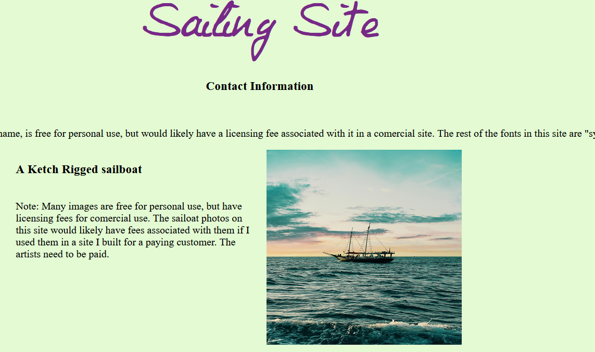
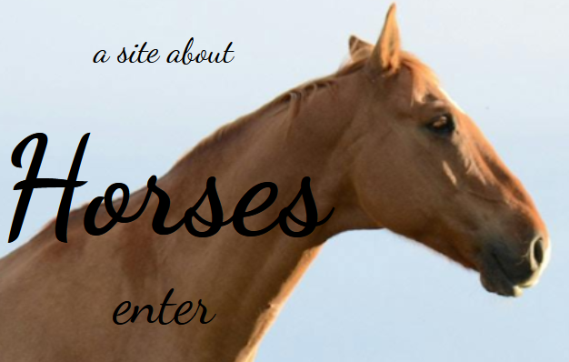
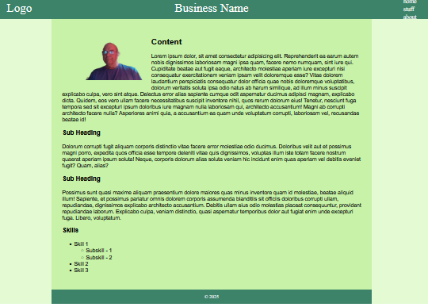
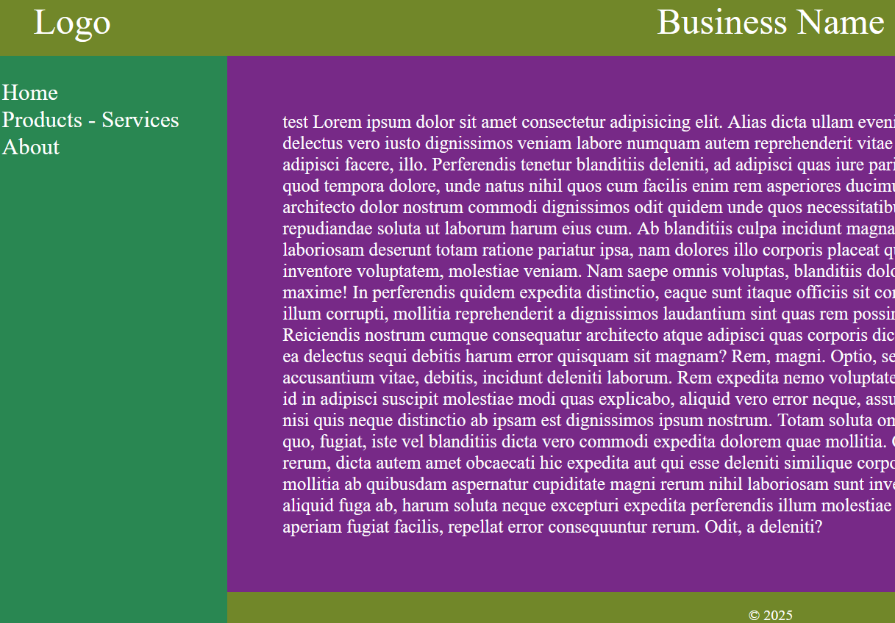

Simplicidad
Los sitios más simples son los menos costosos. Utilizan plantillas para crear una experiencia visual enriquecida para su contenido. El objetivo de estos sitios es contar la historia de su negocio y proporcionar su información de contacto.
Se consideran simples (a veces llamados sitios estáticos) porque no toman ningún dato para almacenar o manipular. Tampoco tienen muchas características personalizadas que requieran una codificación extensa.
Plantillas
A continuación se enumeran una muestra de plantillas. Se pueden crear con su contenido por aproximadamente $100 por página. Puede personalizar estas plantillas con sus propias imágenes, estilos de letra y colores. También puede agregar listas y encabezados que faciliten la lectura de su contenido.
Todos los sitios que construyo son accesibles y receptivos, lo que significa que funcionan bien con lectores de pantalla para personas con discapacidad visual y dispositivos móviles.
Haga clic en la imagen debajo de la descripción para ver una página web de muestra. Utilice el botón "atrás" del navegador para volver a esta página.
Página Única
Un ejemplo de plantilla de sitio de una sola página. Se puede configurar como una lista de imágenes con contenido textual o con una sola columna como un currículum. Nota: Muchas imágenes son gratuitas para uso personal, pero tienen tarifas de licencia para uso comercial. Las fotos de veleros en este sitio probablemente tendrían tarifas asociadas si las usara en un sitio que construí para un cliente que paga. Los estilos de letra son similares en el sentido de que a veces tienen una tarifa asociada con su uso. Este sitio utiliza una fuente del sistema, que es gratuita. Los artistas necesitan que se les pague.
Página de Aterrizaje
Una página de destino se puede utilizar como entrada a su sitio. En su mayoría es decorativo y está diseñado para crear un ambiente para el sitio. Enlaza con el contenido principal del sitio que utiliza un diseño diferente.
Diseño en "T"
Los diseños en "T" y " L " son similares. La diferencia está en la ubicación del menú de navegación. Ambos diseños son comunes en Internet. En la lista de navegación del diseño " T " ubicada en la parte superior derecha de la página.
Diseño en "L"
El diseño en " L " tiene el menú de navegación en el lado izquierdo de la página debajo del logotipo.
Currículum Vitae
Este es un sitio web muy simple que se puede utilizar como currículum. Tiene las siguientes características:- Compartible a través de un código QR que se puede usar para compartir el currículum con un teléfono o impreso en un banner. El .el archivo svg utilizado para el código QR se incluye en el sitio web y se puede utilizar para otros fines.
- Está hecho en varios idiomas, por lo que el currículum puede ser visto por múltiples comunidades. Nota: Utilizo un servicio de traducción en línea para producir texto que no está en inglés, por lo que el comprador debe estar listo para verificar el significado correcto del contenido.
- Contiene una imagen de la persona, para que el espectador pueda ver con quién está tratando.
- Puedo producir un sitio web de currículum vitae a partir de esta plantilla con dos idiomas a partir de $15 USD.